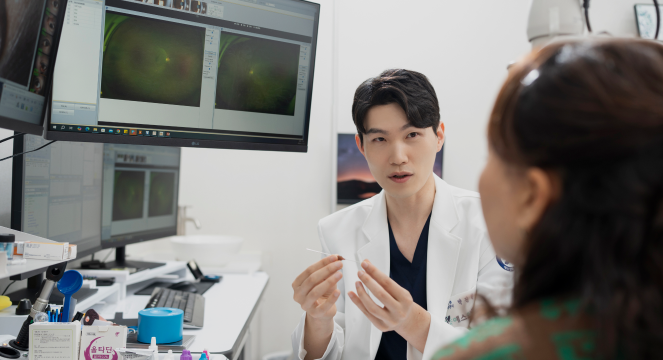
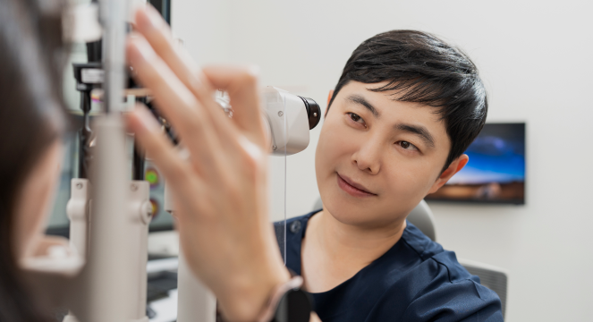

CATARACT SURGERY
백내장 수술
혼탁해진 수정체를 정밀 초음파 시스템으로 안전하게 제거하고, 환자의 눈 조건과 라이프스타일에 맞춘 프리미엄 인공수정체(단초점·다초점)를 삽입합니다.
- 독립된 4층 수술센터 및 멸균 공조
- 환자 라이프스타일 맞춤 렌즈 설계
- 수술 전 정밀 계측 및 사후 안심 관리
안과 전문의가 정밀 검사를 바탕으로 정직하게 진료합니다.
혼탁해진 수정체를 정밀 초음파 시스템으로 안전하게 제거하고, 환자의 눈 조건과 라이프스타일에 맞춘 프리미엄 인공수정체(단초점·다초점)를 삽입합니다.
밤에 착용하고 잠자는 동안 각막 중심부를 부드럽게 성형하여 낮 동안 안경 없이 선명한 시력을 유지하고, 성장기 근시 진행을 억제합니다.
노안, 녹내장, 황반변성, 안구건조증 등 40대 이후 급증하는 주요 성인 안질환을 조기에 발견하고 체계적인 보존적·의학적 치료를 시행합니다.
분야별 세분화된 안과 전문의의 협진으로 환자 한 분 한 분께 안전하고 정확한 진료를 약속합니다.
안과 세부전문의 협진
대학병원 교수출신
독립된 수술센터 (청정 무균 시스템)
예스안과의원은 서울 양천구 등촌로 32 목동태영프라자에 위치하여 목동 및 인근 지역 주민의 눈 건강을 책임지고 있습니다. 4층에는 수술센터, 5층에는 외래검사센터를 두고 검사와 수술 공간을 구분하여 운영합니다.
4인의 안과 전문의가 백내장, 소아 근시 및 드림렌즈, 노안, 녹내장, 망막 질환 등 다양한 안과 분야에서 축적된 노하우를 바탕으로 과잉 진료 없이 꼭 필요한 정직한 치료만을 제안합니다.
안과 전문의 4인이 정밀한 검사를 바탕으로 진료합니다.


접수부터 정밀 검사, 전문의 상담, 치료 및 사후 관리까지 체계적인 원스톱 프로세스
네이버 예약 또는 유선 전화를 통해 편리한 일정으로 예약 후 5층 외래센터에서 접수합니다.
각막지형도, 안축장 길이 측정, 망막 단층촬영(OCT) 등 전문 검사장비로 정밀 측정을 진행합니다.
안과 전문의가 검사 결과를 토대로 현재 안구 상태를 상세히 설명하고 최적의 치료 방향을 상의합니다.
4층 수술센터 또는 외래 처방을 통해 맞춤 치료를 시행하며, 정기 검진을 통해 회복 경과를 꼼꼼히 확인합니다.
오차를 최소화하고 안전성을 높이기 위해 검사 및 수술 장비를 보유하고 있습니다.

Stellaris
백내장 초음파 유화흡입술에 사용하는 수술장비입니다.

동공을 넓히지 않고 넓은 범위의 망막을 한 번에 촬영합니다.

각막 형태와 두께, 전안부 구조를 분석합니다.

눈물층 안정성, 눈물막 높이, 마이봄샘 상태 등을 비침습적으로 검사합니다.
소아부터 어르신까지 온 가족의 시력을 지키기 위한 체계적인 진료 프로그램을 운영합니다.
단초점·다초점 인공수정체 맞춤 선택 및 무균 4층 수술센터 진행
수면 중 시력 교정 및 성장기 근시 진행 억제 1:1 맞춤 처방
40대 이후 근거리 시력 저하 정밀 진단 및 생활 패턴 맞춤 솔루션
시신경 손상 조기 발견을 위한 안압 측정, 시야 검사, OCT 정밀 분석
당뇨망막병증, 황반변성 등 실명 질환의 정밀 검진 및 경과 추적
마이봄샘 분석 및 IPL 온열 광선 치료를 통한 만성 건성안 개선
근시, 원시, 난시 정밀 굴절검사 및 안과 종합 정밀 건강검진
진료와 검사 전 가장 많이 주시는 질문에 안과 전문의가 명확하게 답변해 드립니다.
목동 예스안과의원은 목동태영프라자 4층에 감염 예방을 위한 청정 멸균 공조 설비의 독립 수술센터를 운영하고 있습니다. 5층 외래센터에서 첨단 장비로 사전 정밀 검사를 완료한 후, 4인의 안과 전문의 협진 하에 안전하고 편안하게 수술을 받으실 수 있습니다.
일반적으로 만 7세 전후(초등학교 입학 연령)부터 착용이 권장됩니다. 아이가 스스로 착용하거나 부모님의 지도가 가능한 시기에 시작하는 것이 좋습니다. 정확한 착용 가능 여부는 5층 외래센터에서 각막 지형도 및 세극등 정밀 검진 후 전문의와 상담을 통해 결정됩니다.
수술 직후 일주일간은 눈에 물이 들어가지 않도록 세안과 머리 감기에 각별히 유의해야 하며, 처방받은 안약(항생제 및 소염제)을 정해진 시간에 정확히 점안해야 합니다. 수면 시에는 무의식적으로 눈을 비비지 않도록 안대를 착용하시고, 무거운 물건 들기나 과격한 운동은 피하시는 것이 좋습니다.
기본 시력 및 굴절 검사 후 각막 만곡도 및 각막 지형도 검사를 통해 각막 형태를 정밀하게 분석합니다. 이후 테스트 렌즈를 직접 시험 착용(약 30분~1시간)하여 눈 상태에 적합한 곡률과 도수를 확인하고, 최적의 렌즈를 맞춤 제작 처방합니다.
네이버 예약을 통해 24시간 언제 어디서나 간편하게 진료 일정을 선택하실 수 있으며, 대표전화(02-6956-1112)로 연락 주시면 진료 일정 및 검사 상담을 친절하게 도와드립니다.
목동태영프라자 4층 수술센터와 5층 외래검사센터로 편리하게 방문하실 수 있습니다.
| 구분 | 진료 시간 | 비고 |
|---|---|---|
| 월·화·수·목요일 | 09:00 ~ 18:00 | 점심시간 없음 |
| 금요일 | 09:00 ~ 19:30 | 점심시간 없음 |
| 토요일 | 09:00 ~ 15:00 | 점심시간 없음 |
| 일요일·공휴일 | 휴진 | |
※ 토요일 및 정밀 검사는 조기 마감될 수 있으니 사전 예약을 권장합니다.
서울특별시 양천구 등촌로 32 목동태영프라자
(4층 수술센터 / 5층 외래검사센터)
※ 의료법 준수 안내: 본 웹사이트에 제공된 모든 의료 및 건강 정보는 일반적인 의학적 참고 사항이며, 개인의 연령, 기저질환, 눈 상태에 따라 치료 효과 및 부작용(출혈, 감염, 안압상승 등)이 다를 수 있습니다. 정확한 진단과 시술은 반드시 안과 전문의와의 직접 상담 및 검진을 거쳐 결정하시기 바랍니다.